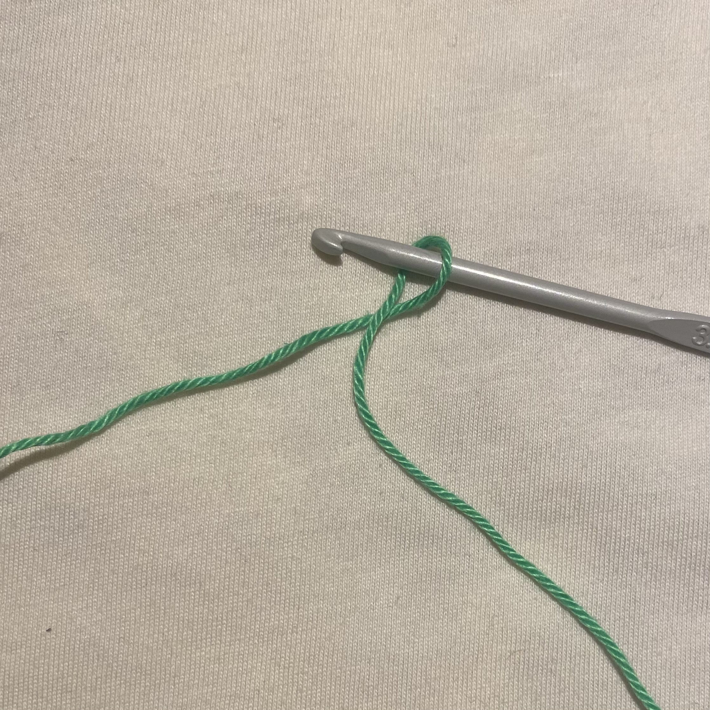
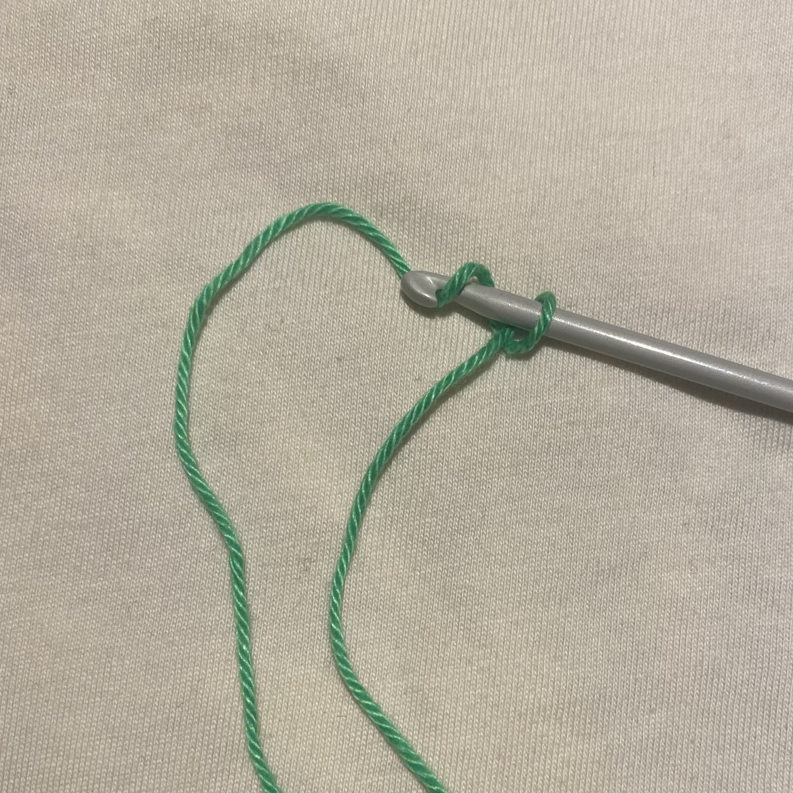
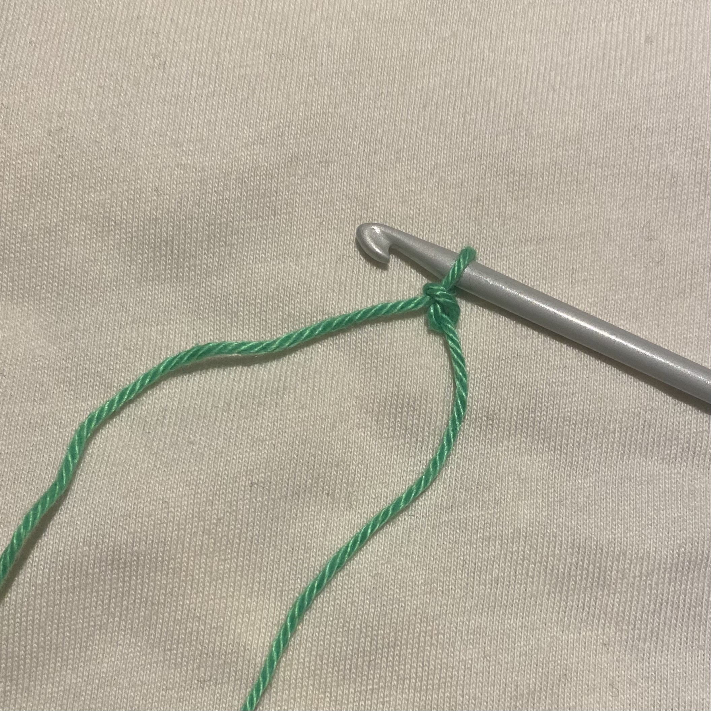

With your right hand, draw out a suitable amount of yarn. Wrap it around the hook.

Step one of making the a chain
Yarn Over
With your left hand, loop the working yarn over your index finger, under the next two fingers, and over your pinky to hold it. You have more control over the yarn's tension thanks to this.
To hold the slip knot while you work the stitches, pinch it between your thumb and middle finger.
Now with the hook in your right hand, grab the yarn from underneath.

Step two of making the a chain
Pull the chain stitch
You did the Yarn Over and now, pull it backwards through the loop that is already on your hook.
Tighten the slip knot.

Step three of making the a chain
Repeat
Reprat steps 2 and 3 until you reach the desired lenght.